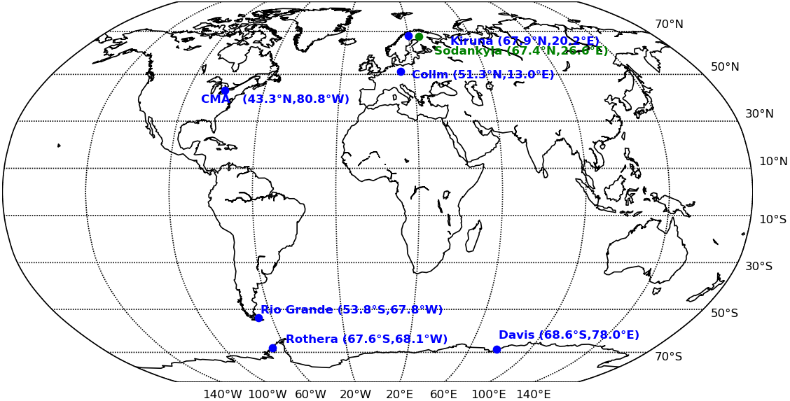

Introduction¶
The average meteorological conditions during SSW events should be characterized in this project. Thus, this project does not aim to investigate the differences between individual events. It rather concentrates on the mean perturbations to be expected during an “average” SSW event.
Therefore a method which is called “superposed epoch analysis” (sometimes known as composite analysis as well) was used. At that the data from each event are ordered with reference to the so-called “epoch time” (Denton et al., 2019). In this case this is the time of the SSW onset. These ordered data were then averaged over all considered SSW events in order to receive the average conditions. These were then plotted for a time period from 40 days before to 40 days after the SSW onset. The dates at which SSW events occured were extracted from King et al. (2019).
To investigate anomalies as well, the deviation relative to the climatologies for the same calendar day was derived.
Data¶
The data used in this project consist of meteor radar measurements for eight stations. The location of these stations is shown in the map below.
Six of them - Andenes, Kiruna (Esrange), Sodankyla, Collm Observatory, Juliusruh and the CMOR meteor radar at London, Ontario (further referred to as CMA) - are situated on the northern hemisphere. Whereas Rio Grande and Davis are located on the southern hemisphere. Because of the different lengths of the time series at the five stations not all SSW events could be investigated at each station. The data availability of the different stations and the corresponding number of SSWs included in the analysis is shown in the table below.
Geographical location of the meteor radar stations¶

Data availability and number of SSW events¶
| Station | Start | End | Number of SSWs |
|---|---|---|---|
| Kiruna | 01.08.1999 | 31.12.2020 | 11 |
| Andenes | 01.06.2002 | 31.12.2020 | 9 |
| Sodankyla | 01.10.2008 | 31.12.2020 | 4 |
| Collm | 01.08.2004 | 31.12.2020 | 7 |
| Juliusruh | 01.01.2002 | 31.12.2020 | 9 |
| CMA | 01.01.2002 | 31.12.2018 | 9 |
| Rio Grande | 01.02.2008 | 31.12.2020 | 4 |
| Davis | 01.01.2005 | 31.12.2020 | 7 |